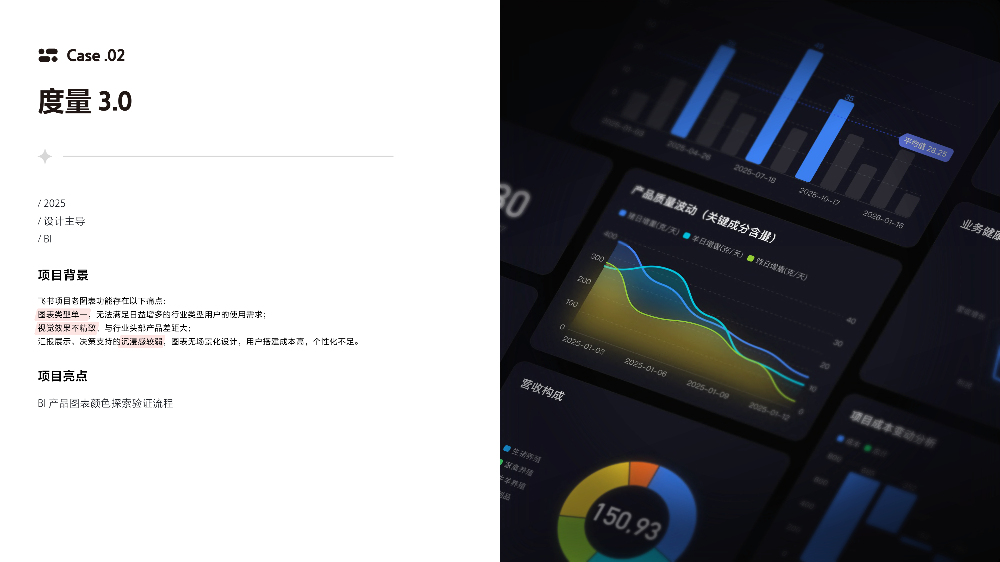
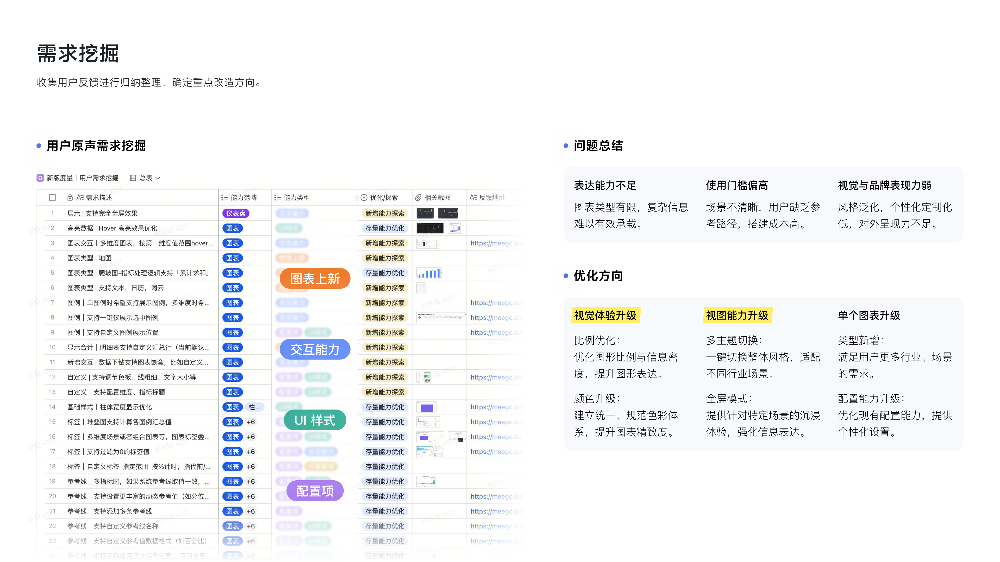
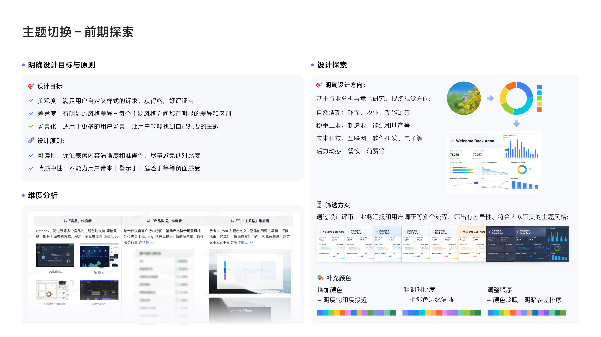
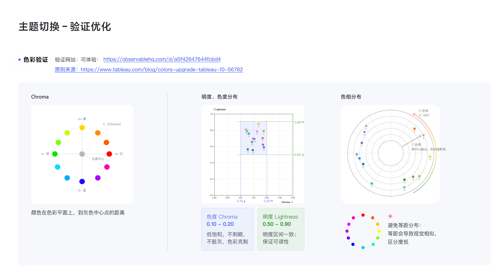
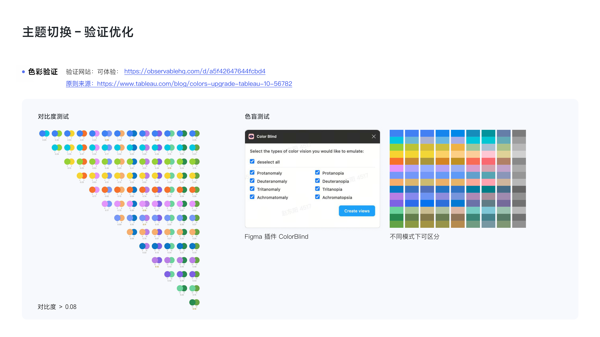
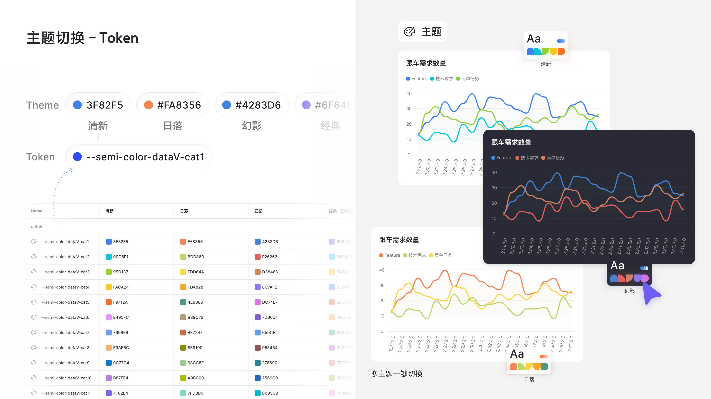
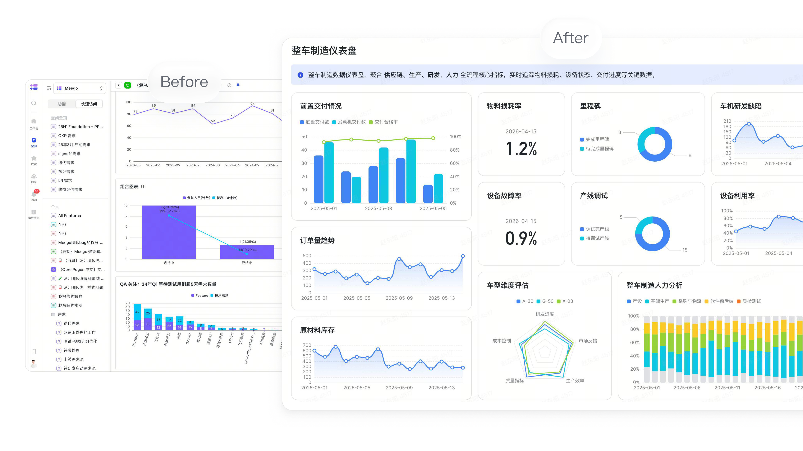
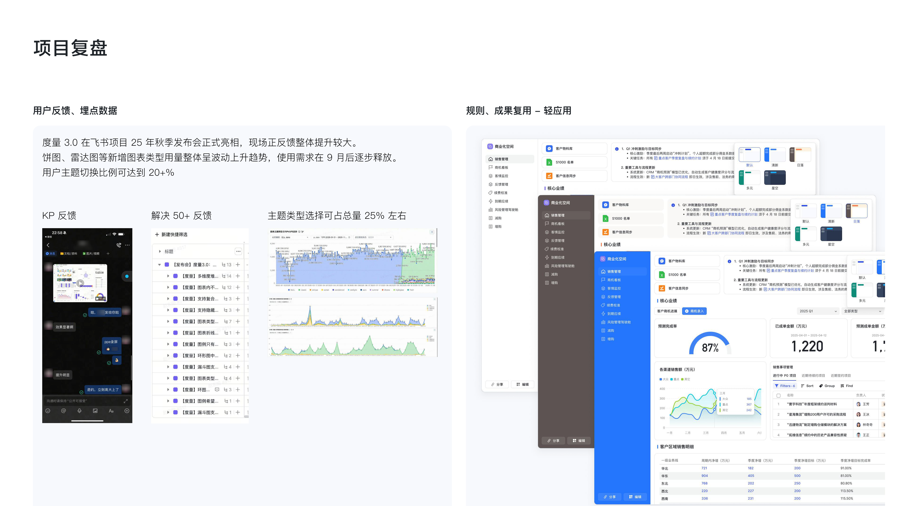

表达能力
原有图表类型和视图能力难以覆盖更多行业与汇报场景。
Case 02 / Data Visualization
度量 3.0：从「能看数据」到专业仪表盘——主题色体系、可验证的色彩方法与工程化 Token。
项目背景
它帮助企业在项目执行中查看效率、质量、风险与产出。当客户行业增多，度量页开始承担月度汇报、季度复盘和管理层展示，用户对图表专业感、主题差异和沉浸展示的要求明显提高。

问题定义
用户反馈看起来很分散：有人希望图表更丰富，有人觉得配置复杂，也有人需要更适合汇报的展示效果。归纳后，核心问题集中在表达能力、使用门槛和视觉品牌感。

原有图表类型和视图能力难以覆盖更多行业与汇报场景。
配置项多，用户需要花较长时间才能做出可用图表。
默认样式不够精致，也缺少能匹配行业气质的官方主题。
主题探索
主题不是简单换皮。它需要提升默认美观度，保留颜色与描边等必要自定义，同时让科技、制造、能源、地产、环保等客户都能找到匹配自身气质的表达方式。

颜色验证
我用 Chroma 控制颜色是否过灰或过饱和，用 Lightness 保证色块区分和文字可读，用 Hue 让每套主题集中在 2–3 个主色相扇区，形成明确的行业气质。


工程落地
主题验证完成后，颜色需要进入 Token 才能稳定落地。cat1、cat2、cat3 等语义数据色被图表组件统一调用，切换主题时折线、柱状、饼图和雷达图同步更新。



结果复用
覆盖图表类型、显示效果、主题能力和展示体验。
说明用户确实存在主题切换和风格适配需求。
行业分析、取色、Chroma / 明度 / 对比度验证和 Token 定义，沉淀为可复用的数据色设计流程。
